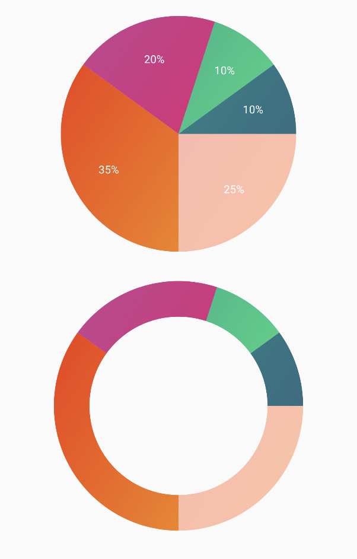

PieChart
| Pointed Line Curve |
|---|
 |
🍸Overview
This function displays a Pie Chart using a list of PieChartData slices. It supports rendering either a standard pie chart or a donut-style chart (with a hole in the center). Each slice is interactive and can trigger a click callback.
🧱 Declaration
@Composable
fun PieChart(
data: () -> List<PieChartData>,
modifier: Modifier = Modifier,
isDonutChart: Boolean = false,
onPieChartSliceClick: (PieChartData) -> Unit = {}
)
isDonutChart is used to make donut of PieChart
🔧 Parameters
| Parameter | Type | Description |
|---|---|---|
data |
() -> List<PieChartData> |
A lambda that returns the list of pie slices to display. Each slice is represented by a PieChartData object. |
modifier |
Modifier |
A Modifier for customizing the layout and appearance of the chart (e.g., size, padding, etc.). |
isDonutChart |
Boolean |
If true, the chart is displayed as a donut (with a circular center cut out). Default is false for a full pie. |
onPieChartSliceClick |
(PieChartData) -> Unit |
Callback invoked when a slice is clicked, providing the clicked PieChartData as a parameter. Useful for interactivity like tooltips or data inspection. |
🧮 PieChartData Model
```kotlin data class PieChartData( val value: Float, val color: ChartColor, val labelColor: ChartColor = Color.White.asSolidChartColor(), val label: String, )
| Parameter | Type | Description |
|--------------|--------------|---------------------------------------------------------------------------------------------|
| `value` | `Float` | The numeric value of the slice. This determines the size (angle) of the slice in the chart. |
| `color` | `ChartColor` | The fill color of the slice. Can be solid or gradient depending on implementation. |
| `labelColor` | `ChartColor` | The color of the text label associated with the slice. Defaults to white (`Color.White`). |
| `label` | `String` | The textual label to display for the slice. Typically shown in or near the slice. |
> You can find a mock implementation in sample module's App file
## Example Usage
```kotlin
@Composable
fun SamplePieChart() {
PieChart(
data = { samplePieData },
isDonutChart = true,
onPieChartSliceClick = { slice -> println("Clicked: ${slice.label}") },
modifier = Modifier.size(200.dp)
)
}